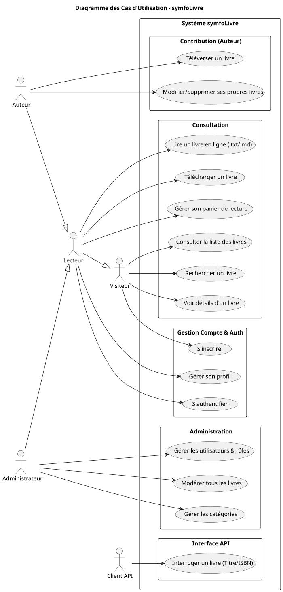
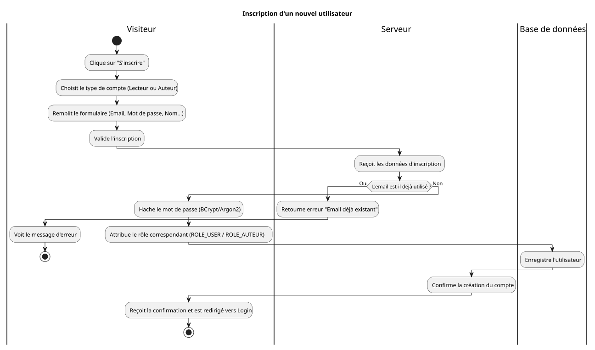
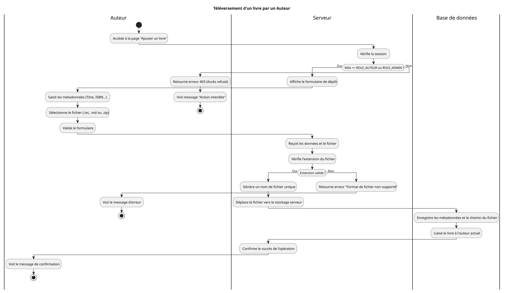
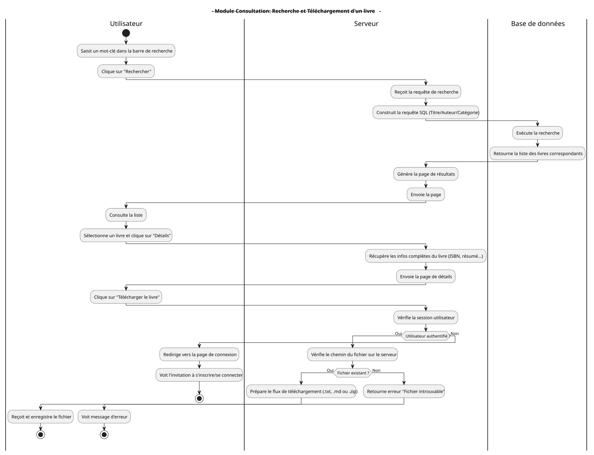
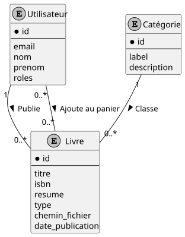
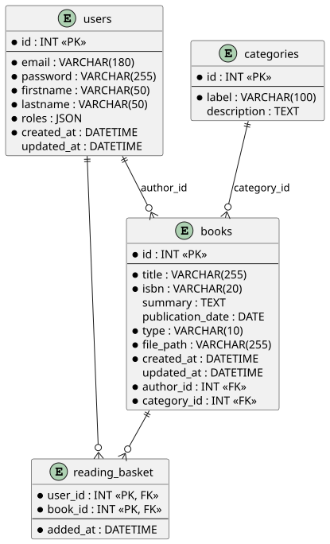
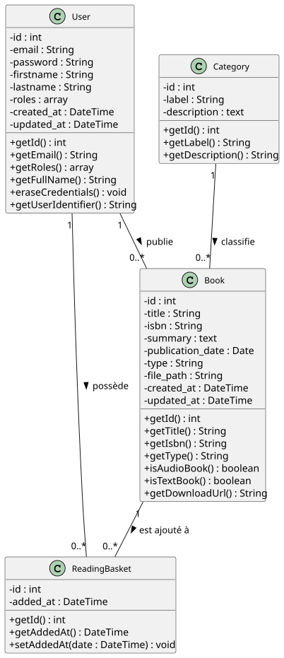

Soutenance pour l'obtention du Titre Professionnel
Concepteur Développeur d'Applications (CDA)
Présenté par : [Lopez Rudy]
Date : Septembre 2026
Inspiration issue du service EOLE (Association Valentin Haüy) : fournir des livres adaptés aux personnes en situation de handicap visuel ou moteur.
L'objectif est de créer une plateforme généraliste permettant la diffusion d'ouvrages en formats Texte (.txt, .md) et Audio (.zip/mp3).
Projet réalisé en autonomie suite à un stage chez [BAM] (propriété intellectuelle restreinte).
Démarche visant à démontrer l'intégralité des compétences du référentiel CDA : de l'analyse au déploiement.

L'application repose sur des processus critiques modélisés par diagrammes d'activités :

Processus d'inscription
Téléversement d'un livre
Recherche & Téléchargement


L'application suit l'architecture MVC (Modèle-Vue-Contrôleur) native à Symfony :
/uploads avec noms de fichiers uniques.BookRepository (LIKE pour titre, '=' pour ISBN).Vérification des entités (ex: logique des rôles dans User.php).
Validation des requêtes Repository avec base de données de test.
Simulation de parcours utilisateurs via WebTestCase (Login, accès interdits).
composer install --no-dev.doctrine:migrations:migrate.Je suis désormais ouvert à vos questions.